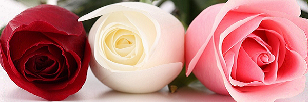

EllieWhite.com Türkiye'de çiçekçilik anlayışını değiştirmek, en kolay ve en ekonomik yoldan çiçek göndermeyi sağlamak için 2006 senesinde kuruldu. EllieWhite.com, Türkiye genelinde, birlikte çalıştığı 350'den fazla çiçekçi iş ortağı ile Türkiye’de online çiçek ve hediye sektörünün lider e-ticaret sitesi haline geldi.
2011 yılında, Amazon.com ve Avrupalı Venture Capital şirketi HummingBird, EllieWhite.com'a ortak oldu. EllieWhite.com bu yatırımlarla uluslararası alanda da varlığını gösterdi.
Bright E-Ventures Corporation markası EllieWhite.com, çiçek aranjmanlarının yanı sıra farklı ürün gruplarını da bünyesine katarak ürün çeşitliliği hacmini genişletti.